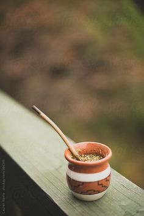

El mate, una bebida emblemática de América del Sur, ha sido compartido y disfrutado por generaciones. Originario de las culturas indígenas de la región, el mate es mucho más que una bebida; es un símbolo de hospitalidad y amistad. Preparado con hojas de yerba mate, el mate se consume en una calabaza o recipiente especial llamado "mate" y se bebe a través de una bombilla. El ritual de compartir un mate es una tradición arraigada en la cultura de países como Argentina, Uruguay, Paraguay y partes de Brasil. En reuniones familiares, entre amigos o en el trabajo, el compañero es una excusa para conectarse, conversar y disfrutar del momento. Su sabor amargo y aroma reconfortante son una invitación a la reflexión y la camaradería, lo que lo convierte en una bebida única en el mundo.
El mate no solo es una bebida social y culturalmente significativa en América del Sur, sino que también ofrece una serie de beneficios para la salud. Rica en antioxidantes y nutrientes esenciales, la yerba mate utilizada para preparar el mate proporciona un impulso de energía suave y sostenible, similar a la cafeína pero sin los efectos secundarios negativos. Además, el mate se ha asociado con la mejora de la concentración y la claridad mental. Aunque normalmente se bebe caliente, también se puede disfrutar frío con limón y hierbas aromáticas para una alternativa refrescante. Además, en algunos lugares, se ha popularizado el "tereré", una versión fría del mate, especialmente durante los días calurosos. En resumen, el mate no solo es una bebida con profundas raíces culturales,
La preparación y el consumo del mate tienen su propia etiqueta y ritual. Comenzando con la elección de la yerba mate y su cantidad, seguida por la temperatura del agua y la forma en que se ceba (prepara) el mate, cada detalle tiene un impacto en su sabor y calidad. Los amantes del mate aprenden a respetar estos detalles ya ajustar el proceso según sus preferencias personales. Además, la persona que ceba el mate asume un papel especial, ya que es responsable de preparar y servir la bebida a los demás. A medida que la bombilla pasa de una persona a otra, se establece un vínculo de confianza y amistad. La etiqueta del mate es una parte esencial de su encanto, y cada reunión para compartir esta bebida se convierte en una oportunidad para aprender y celebrar una tradición única.